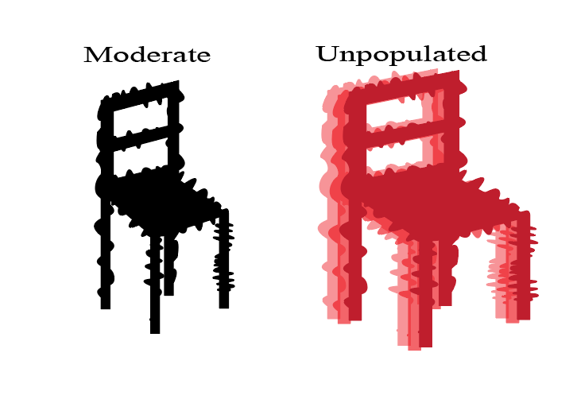
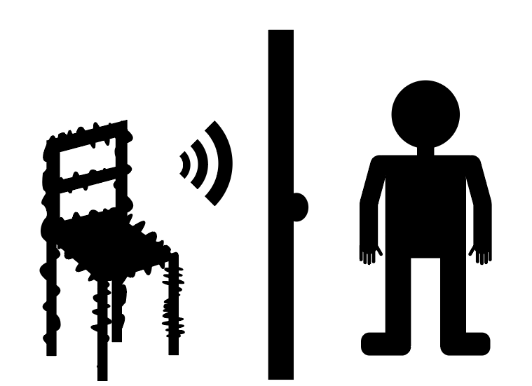

Home Hider Population By Area
| Northeastern Region (Maine, New Hampshire, Vermont, Massachusetts, Rhode Island, Connecticut, New York, Pennsylvania, and New Jersey) | Approximately 327 Home Hiders |
|---|---|
| Southern Region (Delaware, Maryland, Virginia, West Virginia, Kentucky, Tennessee, North Carolina, South Carolina, Georgia, Florida, Alabama, Mississippi, Arkansas, Louisiana, Texas, and Oklahoma) | Approximately 683 Home Hiders |
| Midwestern Region (Ohio, Michigan, Indiana, Illinois, Wisconsin, Minnesota, Iowa, Missouri, North Dakota, South Dakota, Nebraska, and Kansas) | Approximately 892 Home Hiders |
| Western Region (Montana, Wyoming, Colorado, New Mexico, Idaho, Utah, Nevada, Arizona, Washington, Oregon, and California) | Approximately 1,436 Home Hiders |
Behavior Based on Human Population

| Lightly Populated | They are very aggressive, as food sources are more few and far between, which in turn makes them more desperate. In lightly populated areas, they will not give up as easily. |
|---|---|
| Moderately Populated | They are what most consider normal Home Hiders. In moderately populated areas, attacks can persist, but with enough resistance, they will end up searching elsewhere for an easier target. |
| Severely Populated | They are very calm, patient and relaxed. While they are still incredibly dangerous, their attacks are relatively infrequent due to an overabundant source of food. If they end up attacking, it's likely in a scenario where they have you cornered with no escape. Wherever you are, always remember to have at least two escape routes from every place you visit. |
| Unpopulated | WARNING: If there is even one Home Hider in an area generally unoccupied by humans, chances of survival are slim to none. These areas include camp sites, resevoirs, and select national parks. Be cautious as you visit these areas. Any of these areas that have been found to contain Home Hiders have temporarily been shut down and restricted by law. |
Home Hider Tactics

| Tactic | Frequency | Risk Group | Preventative Measures |
|---|---|---|---|
| Suffocation | 77% | All | Any previous measures already mentioined in our Home Hiders episode. |
| Disguise as Nearby Furniture | 92% | All (higher risk associated with poor eyesight) | Keep a close eye on any furniture that seems to have vanished and recently returned without explanation. |
| Humanoid Voices | 48% | Those with thicker walls where vocal sounds are indistinguishable | Do not let anyone in who's speech sounds like reversed incomprehensible voices. |
| B̵̜̞͌E̶̫̻̳͂̋̑̚Ḭ̵̲̱̏̈́̊͛N̴̞̤̫̠͊̾Ḡ̴͔̀̐ ̵̖̱̗̿͋́C̶̢̳͗O̵͕͚͎͖͛R̵͕͍̟͙͒͌Ń̸̦̐É̶͇R̴̫̻̉̕͠E̷̪̓̊̐̚D̸̳̼̮̈́̈̌͝ͅ | Unknown | E̴͕̖̰͑͛͒V̸̜͕̍̌̈́È̸͇̼̝̟̓͋R̴̺̩̆Y̵̦̬̭̰̐͠Ő̴̧̧̯͇̌Ņ̷̗͇̿̈͘E̸̗͆̃̈ | T̴̻̩̝͐̄̕H̶̬̬̔͊̄E̵̫͖̹̳͋̋͝R̸̮̤̳͆̒͠É̴̢̃̕͜ ̸̗̬͈̞̏̒I̵̱̙̩͗̾̉̾Š̸̻͙̥̌́͠ ̶̧͚̮̙̀̈́̀N̷̜̳̲͆̊Ǒ̵̟̱̮̟̌͝ ̶̧͉̲̗̈͋̈͝Ë̶̟͇̣̳͑́Ś̵͉C̶̳̜̼̿͌͂A̴̡̹̖̞͑̂̿̔P̸̛̮͕E̷͎͖̰̍͝ |